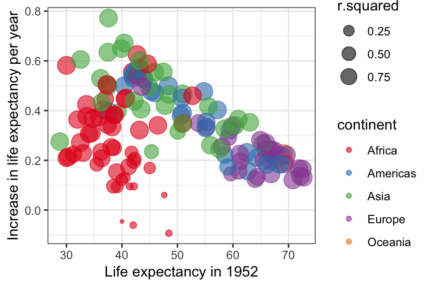

7.5 Multiple linear regression
Multiple linear regression includes more than one predictor variable. There are a few ways to include more variables, depending on whether they should share the intercept and how they interact:
Simple linear regression (exactly one predictor variable):
myfit = lm(lifeExp~year, data=eurodata)
Multiple linear regression (additive):
myfit = lm(lifeExp~year+country, data=eurodata)
Multiple linear regression (all interactions):
myfit = lm(lifeExp~year*country, data=eurodata)
Multiple linear regression (some interactions):
myfit = lm(lifeExp~year:country, data=eurodata)
These examples of multiple regression include two variables: year and country, but we could include more by just adding them with +.
7.5.1 Exercise
Open the second Shiny app (“Multiple regression”) and see how:
- In simple regression, there is only one intercept and slope for the whole dataset.
- Using the additive model (
lm(formula = y ~ x + group) the two lines (one for each group) have different intercepts but the same slope. However, thelm()summary seems to only include one line called “(Intercept)”, how to find the intercept for the second group of points? - Using the interactive model (
lm(formula = y ~ x*group)) the two lines have different intercepts and different slopes.
7.5.2 Exercise
Convince yourself that using an fully interactive multivariable model is the same as running several separate simple linear regression models. Remember that we calculate the life expectancy in 1952 (intercept) and improvement per year (slope) for Turkey and the United Kingdom:
fit_uk %>%
tidy() %>%
mutate(estimate = round(estimate, 2)) %>%
select(term, estimate)## term estimate
## 1 (Intercept) 68.81
## 2 year_from1952 0.19fit_turkey %>%
tidy() %>%
mutate(estimate = round(estimate, 2)) %>%
select(term, estimate)## term estimate
## 1 (Intercept) 46.02
## 2 year_from1952 0.50(The lines tidy(), mutate(), and select() are only included for neater presentation here, you can use summary() instead.)
We can do this together using year_from1952*country in the lm():
mydata %>%
filter(country %in% c("Turkey", "United Kingdom")) %>%
lm(lifeExp ~ year_from1952*country, data = .) %>%
tidy() %>%
mutate(estimate = round(estimate, 2)) %>%
select(term, estimate)## term estimate
## 1 (Intercept) 46.02
## 2 year_from1952 0.50
## 3 countryUnited Kingdom 22.79
## 4 year_from1952:countryUnited Kingdom -0.31Now. It may seem like R has omitted Turkey but the values for Turkey are actually in the Intercept = 46.02 and in year_from1952 = 0.50. Can you make out the intercept and slope for the UK? Are they the same as in the simple linear regression model?
7.5.3 Exercise
Add a third country (e.g. “Portugal”) to filter(country %in% c("Turkey", "United Kingdom")) in the above example. Do the results change?
7.5.4 Optional (Advanced) Exercise
Run separate linear regression models for every country in the dataset at the same time and putting it all in two neat dataframes (one for the coefficients, one for the summary statistics):
linfit_coefficients = mydata %>%
group_by(country) %>%
do(
tidy(
lm(lifeExp~year, data=.)
)
)
linfit_overall = mydata %>%
group_by(country) %>%
do(
glance(
lm(lifeExp~year, data=.)
)
)Plot the linear regression estimate (improvement per year between 1952 – 2007), size the points by their r-squared values, and colour the points by continent (hint: you will have to join mydata, linfit_coefficients %>% filter(term == "year"), and linfit_overall):
mydata %>%
filter(year == 1952) %>%
full_join(linfit_coefficients %>% filter(term == "year"), by = "country") %>%
full_join(linfit_overall, by = "country") %>%
ggplot(aes(x = lifeExp, y = estimate, colour = continent, size = r.squared)) +
geom_point(alpha = 0.6) +
theme_bw() +
scale_colour_brewer(palette = "Set1") +
ylab("Increase in life expectancy per year") +
xlab("Life expectancy in 1952")